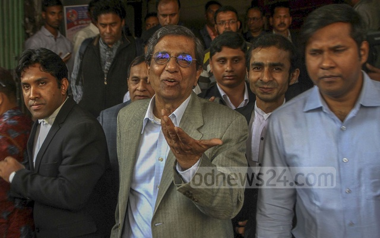

মতিউর রহমানের মামলা বাতিলের আবেদনের শুনানি নিয়ে বিচারপতি মো. রেজাউল হক ও বিচারপতি মো. আতোয়ার রহমানের হাই কোর্ট বেঞ্চ
রোববার রুলসহ এ আদেশ দেয়।
মতিউর রহমানের ক্ষেত্রে মামলাটি কেন বাতিল করা হবে না, জানতে চাওয়া হয়েছে ওই রুলে।
হাই কোর্টে মতিউর রহমানের পক্ষে শুনানি করেন ব্যারিস্টার রোকন উদ্দিন মাহমুদ ও মোস্তাফিজুর রহমান খান। রাষ্ট্রপক্ষে
ছিলেন ডেপুটি অ্যাটর্নি জেনারেল সাইফুদ্দিন খালেদ।
মোস্তাফিজুর রহমান খান পরে বিডিনিউজ টোয়েন্টিফোর ডটকমকে বলেন, গত বছর নভেম্বরে কিশোর আলোর অনুষ্ঠানে ঢাকা রেসিডেন্সিয়াল
মডেল স্কুল অ্যান্ড কলেজের ছাত্র নাইমুল আবরার রাহাতের মৃত্যুর পর তার বাবার করা মামলায় প্রথম আলো সম্পাদক মতিউর রহমানসহ
১০ জনের বিরুদ্ধে তদন্ত প্রতিবেদন দিয়েছিলেন তদন্তকারী কর্মকর্তা।
অভিযোগ গঠনের শুনানি শেষে গত ১২ নভেম্বর কিশোর আলোর সম্পাদক আনিসুল হককে বাদ দিয়ে বাকি নয় জনের বিরুদ্ধে অভিযোগ গঠন করা
হয়।
“এই প্রেক্ষিতে গত ৬ ডিসেম্বর আমরা মতিউর রহমানের ক্ষেত্রে হাই কোর্টে মামলা বাতিল চেয়ে আবেদন করি। আজকে শুনানি শেষে
আদালত রুল জারি করেছে। সেই রুল নিষ্পত্তি না হওয়া পর্যন্ত উনার ক্ষেত্রে আপাতত ছয় মাসের জন্য মামলার কার্যক্রম স্থগিত
করেছে হাই কোর্ট।”
কোন যুক্তিতে মামলা বাতিল চাওয়া হয়েছে জানতে চাইলে এ আইনজীবী বলেন, “আমাদের বক্তব্য ছিল, মামলার পুলিশ প্রতিবেদনে এই
ধরনের কোনো অভিযোগ নাই যে মতিউর রহমান ঘটনাস্থলে উপস্থিত ছিলেন। এ ধরনের কোনো অভিযোগ নাই যে মতিউর রহমান অনুষ্ঠানটি
পরিচালনা করার জন্য সার্বিক দায়িত্বে ছিলেন। এ ধরনের কোনো অভিযোগ নাই যে ঠিকাদার বা ঠিকাদারী প্রতিষ্ঠান অনুষ্ঠানে বিদুৎ
সরবরাহের কাজ করছিল, সে ঠিকাদার বা ঠিকাদারী প্রতিষ্ঠান নিয়োগের ক্ষেত্রে উনার কোনো ভূমিকা ছিল বা অনুষ্ঠানের বিদুৎ
সরবরাহের কাজটা উনি তদারকি করেছেন। এই ধরনের কোনো অভিযোগ নেই।